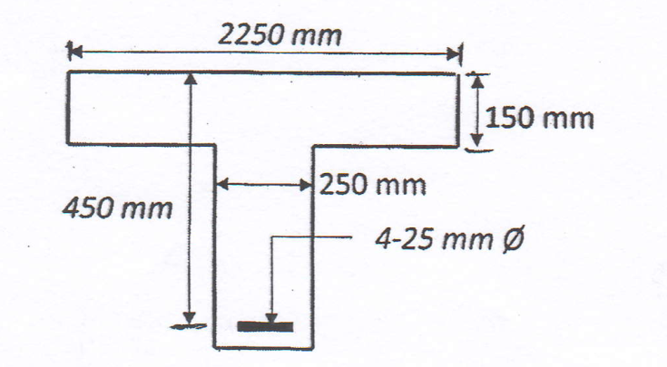
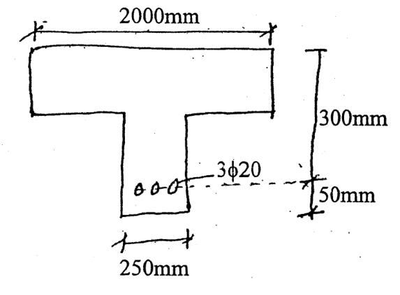
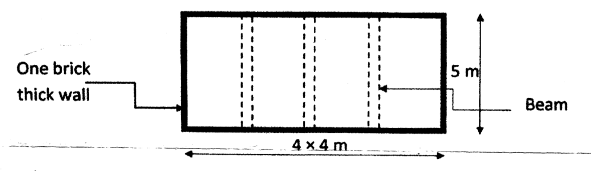

Design of RCC Structures (ENCE 352) — IOE, Year III / Part II. Questions below are compiled from both past-question sets, merged and de-duplicated, then arranged by chapter and subchapter. Many questions are numerical design problems and are kept with their full data. A question that spans more than one topic is cross-listed under each relevant subchapter. Marks are shown as […] and the exam sitting as (Year Session, Qno).
Detailed chapter notes: the eleven chapters linked from the RCC index include the question statements, theory, derivations, design procedures and worked examples. Wording is normalized for readability; missing or ambiguous source data are identified rather than silently invented. The older CE 702 papers are organized against the supplied ENCE 352 syllabus; their 80-mark paper format is not the new syllabus's 60-mark allocation.
Chapter 1: RC Structures & Design Methods 3 Hours
1.1 Concept of RCC: Materials, Advantages & Limitations
- Describe the requirement of steel as reinforcement in RCC structures. Explain the moment of resistance of a doubly reinforced section. Derive the formula. [2+2+4] (2076 Chaitra, Q1a) → also 4.2
- Write the characteristics of steel reinforcing bars used in reinforced concrete structures. [5] (2065 Kartik, Q1a)
1.2 Design Methods of RCC Structures
- Explain different types of design methods used in reinforced concrete structure design. [6] (2069 Chaitra, Q1a)
- Explain how the limit state method of design differs from the working stress method of design. [4] (2081 Bhadra, Q1a)
- Describe the difference between working stress and limit state design. Explain characteristic strength and load. [2+2] (2079 Bhadra, Q1a)
- Differentiate between working stress and limit state methods. [5] (2074 Chaitra, Q3a)
- Why is the limit state method better than the working stress method? Explain in brief. [5] (2072 Chaitra, Q2b)
- Discuss in detail the working stress method versus the limit state method of design with their respective advantages and disadvantages. Compare balanced, under-reinforced and over-reinforced sections in limit state and working stress design methods. [8] (2071 Chaitra, Q4a)
- Compare the factor of safety used in the Working Stress Method and the partial safety factor used in the Limit State Method for concrete and steel. [4] (2067 Ashadh, Q5a)
1.3 Characteristic Strengths and Loads
- Define characteristic loads and characteristic strength. Discuss the stress-strain relation for steel and concrete in the Limit State Method (LSM) and Working Stress Method (WSM). [1+1+2+2] (2078 Bhadra, Q1a)
- Describe the difference between working stress and limit state design. Explain characteristic strength and load. [2+2] (2079 Bhadra, Q1a)
- How do you consider earthquake loads while designing RCC structures? Explain briefly. [4] (2072 Kartik, Q2a)
- Explain characteristic strengths and loads. [3] (2082 Baishakh, Q1a)
1.4 Design Process and Basis for Design
- A reinforced-concrete column of a moment-resisting frame has cross-section 400 mm × 600 mm and effective height 3.6 m. It carries dead load 250 kN, live load 100 kN and an induced horizontal wind load of 5 kN/m. Calculate loading values for all possible loading combinations as per IS 456. [8] (2067 Ashadh, Q1a)
1.5 Overview of Relevant Codes
- Codes IS 456, IS 1893, IS 13920, IS 875 and SP 16 recur across papers as the design basis, but no standalone question is set on this subtopic.
Chapter 2: Working Stress Method 4 Hours
2.2 Working Load and Permissible Stresses
- Using the working stress method, design a rectangular section 300 mm wide and 450 mm deep carrying 30 kN/m load over an effective span of 3.6 m. Use mild steel and M20 concrete. [4] (2071 Chaitra, Q1a)
2.4 Types of Reinforced Concrete Beam and RC Sections
- What are the different types of RCC section of a rectangular beam? Explain with neat sketches. [4] (2082 Bhadra, Q1a)
- Discuss different types of flexural sections according to the amount of reinforcement in the tension zone. Describe the different failure modes in the above-mentioned sections. [8] (2080 Bhadra, Q1a)
2.5 Design / Moment of Resistance of Singly-Reinforced Rectangular Beam (WSM)
- An RC beam 230 mm wide and 400 mm deep (effective depth 380 mm) with area of steel 580 mm² has permissible stresses in concrete and steel of 5 N/mm² and 140 N/mm² respectively. Find the moment of resistance of the section and the actual stresses in concrete and steel. [8] (2080 Baishakh, Q1b)
- A rectangular beam is 350 mm wide and has an effective depth of 650 mm. It is reinforced with five tension bars of 25 mm diameter. Due to an accidental loading condition, the beam has to resist a service-load bending moment of 150 kN·m. Determine whether the beam is safe. Considering the safety of the beam, also determine the stresses developed in the concrete and steel at the state of failure according to the working stress method. Use M25 concrete and Fe415 steel. [8] (2082 Bhadra, Q1b)
- A rectangular beam 300 mm wide and 550 mm effective depth is reinforced with 4 bars of 12 mm diameter. Determine the moment of resistance using the working stress method. Use M20 concrete and Fe415 steel. [8] (2081 Bhadra, Q1c)
- A rectangular beam is 300 mm wide and has an effective depth of 550 mm. It is reinforced with 4 tension bars of 16 mm diameter. Determine the stresses induced in the top compression fibre of the concrete and in the tension steel when the beam is subjected to a bending moment of 50 kN·m. Use M20 concrete and Fe415 steel, with permissible stresses in concrete and steel not exceeding 5 MPa and 140 MPa, respectively. [9] (2081 Baishakh, Q1b)
- Determine the area of steel required and the moment of resistance for a RC beam 250 mm × 450 mm. Consider M15 concrete and mild steel. Use the working stress method. [8] (2080 Bhadra, Q1b)
- An RCC beam 25 cm wide and 60 cm deep has 4 bars of 20 mm diameter as tension reinforcement, the centre of bars being 5 cm above the bottom. Determine the uniformly distributed load the beam can carry over a simply supported effective span of 6.10 m. Permissible stresses in concrete and steel are 7 MPa and 230 MPa respectively; use the modular ratio. [10] (2078 Bhadra, Q1b)
- Calculate the tensile reinforcement required for a rectangular RC beam of size 230 mm × 425 mm (overall) if it has to carry a moment of 64 kNm at service condition. Use M20 concrete and Fe500 steel in the working stress method. [8] (2076 Chaitra, Q1b)
- A rectangular reinforced-concrete beam has overall dimensions of 300 mm × 500 mm and is reinforced with 4 tension bars of 25 mm diameter at an effective cover of 50 mm. The beam is simply supported over an effective span of 5 m. Using the working stress method, calculate the total uniformly distributed load that the beam can carry, including its self-weight. Adopt M20 concrete and Fe415 (TOR) steel. [8] (2076 Ashwin, Q1a)
- A rectangular reinforced-concrete beam has overall dimensions of 250 mm × 450 mm. It is reinforced with 4 tension bars of 16 mm diameter at an effective cover of 40 mm. Calculate the moment of resistance of the beam using the working stress method. Adopt M20 concrete and Fe415 steel. [8] (2075 Chaitra, Q1c)
- A rectangular reinforced-concrete beam has overall dimensions of 230 mm × 350 mm and is reinforced with 4 bars of 16 mm diameter in its bottom tension zone. Determine the moment of resistance of the beam if the permissible stresses in concrete and steel must not exceed 7.0 MPa and 140 MPa, respectively. Take a nominal cover of 25 mm and a modular ratio of 13.33. [7] (2075 Ashwin, Q1a)
- Find the moment of resistance of a reinforced-concrete beam that is 250 mm wide, has an effective depth of 500 mm and is reinforced with 3 bars of 16 mm diameter. The permissible stresses in concrete and steel are 7 MPa and 230 MPa, respectively. Take the modular ratio as 13.33. [6] (2073 Shrawan, Q1a)
- A reinforced concrete beam of size 300 mm × 640 mm overall is reinforced with 4 bars of 20 mm diameter at the bottom. The beam carries a superimposed load of 50 kN/m, excluding its self-weight, over a span of 4 m. Find the actual stresses developed in steel and concrete. Take effective cover of 40 mm and modular ratio of 13.33. Also calculate the compressive stress in concrete at 50 mm from the top of the beam. [10] (2082 Baishakh, Q1c)
- A simply supported rectangular RC beam of effective span 4.2 m and overall dimensions 230 mm × 450 mm is reinforced with four 20 mm diameter bars in tension. Determine the moment of resistance. Take permissible stresses for M20 concrete and Fe415 steel. [6] (2074 Ashwin, Q1b)
- The moment of resistance of a rectangular reinforced-concrete beam of width b and effective depth d is 0.85bd², using N and mm. The extreme concrete and steel stresses must not exceed 7 N/mm² and 140 N/mm², respectively, and the modular ratio is 18.33. Determine the ratio of neutral-axis depth from the compression face to effective depth. The beam is reinforced on the tension side only. [12] (2067 Ashadh, Q1b)
Chapter 3: Limit State Method 5 Hours
3.1 Safety & Serviceability Requirements and Limit States
- State all the possible safety and serviceability requirements of limit state, and define the limit state of strength and serviceability. [4] (2072 Kartik, Q1a)
- Explain the different categories of limit state design with necessary details. [6] (2075 Ashwin, Q3b)
- What are the serviceability requirements in the limit state design of RC structures? Explain them briefly. [4] (2075 Chaitra, Q1b)
- Explain the limit state of serviceability and its requirements in RCC structures. Also list the different types of splicing of reinforcement. [4+1] (2074 Ashwin, Q3a)
- Define the limit state of serviceability. Differentiate between short-term and long-term deflection. [4] (2082 Baishakh, Q5a)
3.2 Design Strength of Materials and Design Loads
- Define design strength and design load for the limit state design method. [4] (2081 Baishakh, Q1c)
3.3 Idealized Stress-Strain Diagram of Concrete and Steel
- What do you understand by the idealized stress-strain diagram of concrete and steel bar? Draw the idealized stress-strain diagrams. Define the characteristic strength of concrete and steel. [2+2+2] (2073 Shrawan, Q4b)
- Define characteristic loads and characteristic strength. Discuss the stress-strain relation for steel and concrete in the limit state method and the working stress method. [1+1+2+2] (2078 Bhadra, Q1a)
- Draw the idealized stress-strain curve for both steel and concrete and discuss the design values of stresses. [5] (2067 Ashadh, Q2c)
- Explain the actual and idealized stress-strain diagram of concrete and deformed bars. [3] (2082 Baishakh, Q1b)
3.6 Balanced, Under-Reinforced and Over-Reinforced Sections
- What are balanced, under-reinforced and over-reinforced sections? Explain with neat sketches of the stress distributions and expressions for the moment of resistance of each section. [6] (2080 Baishakh, Q1a)
- Describe the failure modes in under-reinforced, balanced and over-reinforced sections. [4] (2081 Bhadra, Q1b)
- Describe under-reinforced, over-reinforced and balanced reinforced concrete sections. [7] (2081 Baishakh, Q1a)
- Discuss different types of flexural sections according to the amount of reinforcement in the tension zone. Describe the different failure modes in the above-mentioned sections. [8] (2080 Bhadra, Q1a)
- Explain under-reinforced, balanced and over-reinforced sections in limit state design. [6] (2074 Ashwin, Q1a)
- Explain, with the help of sketches, under-reinforced, over-reinforced and balanced sections. [4] (2075 Chaitra, Q1a)
- Define balanced, under-reinforced and over-reinforced sections. [3] (2076 Chaitra, Q4a)
- Differentiate among the balanced, under-reinforced and over-reinforced sections in a rectangular RC section in the limit state method, with the corresponding strain diagram. [8] (2067 Ashadh, Q5b; first alternative)
Chapter 4: Design for Flexure 8 Hours
4.2 Design of Rectangular Beams (Singly & Doubly Reinforced, LSM)
- A simply supported reinforced-concrete beam has an effective span of 4 m and overall dimensions of 250 mm × 475 mm. It is subjected to a superimposed uniformly distributed load of 45 kN/m, excluding its self-weight, together with a point load of 75 kN at midspan. Design the beam for the limit state of collapse in flexure. Also check whether the beam is safe in deflection. Consider an effective cover of 45 mm, and use M25 concrete and TMT reinforcement. All the given loads are at service level. [10] (2079 Bhadra, Q1c) → also 6.3
- A beam of size 250 mm × 300 mm is simply supported on masonry walls 300 mm thick, 4 m apart, to support a live load of 8 kN/m and dead load of 10 kN/m (including self-weight). Design the beam in flexure. Use M20 concrete and Fe415 steel. [8] (2081 Bhadra, Q2a)
- A beam has a rectangular section 300 mm wide and 500 mm deep to the centre of its tensile reinforcement. It has to carry a dead load of 45 kN/m, excluding its self-weight, over a span of 7 m. Find the steel reinforcement required at the midspan section using the limit state method. Take the effective cover to the compression reinforcement as 40 mm. Use M20 concrete and Fe415 steel. [15] (2074 Chaitra, Q1b)
- A simply supported rectangular RCC beam of effective span 5.5 m and overall dimensions 230 mm × 550 mm is subjected to a superimposed load of 50 kN/m, excluding its self-weight. Design the beam for the limit state of collapse in flexure. Also check whether the beam is safe in deflection. Adopt mild exposure, use Fe415 steel and take effective cover to the bars as 50 mm. [14] (2072 Chaitra, Q1b) → also 6.3
- Design the reinforcement required for a simply supported rectangular beam with an effective span of 6 m. The beam carries a load of 8 kN/m from a slab 120 mm thick. Take the beam width as 250 mm and its overall depth as 450 mm. For the loading calculation, consider a live load of 5 kN/m, a floor-finish load of 3 kN/m and a partition-wall load of 10 kN/m. Use M20 concrete and Fe415 steel. [12] (2067 Ashadh, Q3b)
- A simply supported RCC beam of effective span 4.5 m is subjected to a superimposed load of 45 kN/m, excluding its self-weight, with a point load of 75 kN at midspan. Design the beam for the limit state of collapse in flexure. Also check whether the beam is safe in deflection. Consider an effective cover of 45 mm. Take M25 concrete and Fe415 steel bars. All the given loads are at service level. [8] (2082 Baishakh, Q2a)
4.2 Moment of Resistance of Doubly-Reinforced Sections
- Describe the requirement of steel as reinforcement in RCC structures. Explain the moment of resistance of a doubly reinforced section. Derive the formula. [2+2+4] (2076 Chaitra, Q1a) → also 1.1
- Derive equations for the bending moment carrying capacity of a doubly-reinforced rectangular section using the assumptions for the working stress method given by IS 456:2000. [6] (2079 Bhadra, Q1b)
- Explain the design steps of a doubly reinforced section with neat sketches. [6] (2080 Baishakh, Q1c)
- A reinforced-concrete beam of size 300 mm × 500 mm is reinforced with 5 bars of 25 mm diameter in tension and 5 bars of 12 mm diameter in compression. Both groups of reinforcement have a clear cover of 25 mm. The effective span of the beam is 4.30 m. Find its moment of resistance at the ultimate state. Use M25 concrete and Fe415 steel. [12] (2071 Chaitra, Q4b)
- Find the ultimate moment resisting capacity of the beam shown in the figure. Use M20 concrete and Fe415 steel. The supplied T-section has flange width 2250 mm, flange thickness 150 mm, web width 250 mm, effective depth 450 mm and four 25 mm tension bars. [14] (2073 Shrawan, Q1b; flanged-beam question)

Figure supplied with 2073 Shrawan Q1b. The flange must be included in the analysis.
4.3 Design of Flanged Beam Sections (T-beams and L-beams)
- Determine the moment of resistance of the section shown in the figure. Take permissible concrete stress 7 N/mm² and steel stress 140 N/mm². The T-section has flange width 2000 mm, web width 250 mm, effective depth 300 mm, effective bottom cover 50 mm and three 20 mm tension bars. [8] (2067 Ashadh, Q5b; OR alternative) Source limitation: flange thickness is not dimensioned in the supplied figure.

Original 2067 Ashadh Q5b alternative. Any assumed flange thickness must be labelled. - What is the concept behind the typical flange width in T- and L-beams? Explain with necessary sketches. [2+2] (2082 Bhadra, Q2a)
- Describe the design steps of flanged beam sections. [4] (2081 Baishakh, Q2b)
- Explain the design steps of flanged beams. [5] (2078 Bhadra, Q3c)
- Explain how you would design shear reinforcement for flanged beam sections. [5] (2074 Chaitra, Q1a) → also 5.1
- Determine the limiting moment of resistance and limiting area of steel for a RC T-beam of effective flange width 1500 mm, effective depth 590 mm, flange depth 150 mm and web width 240 mm. Use M20 concrete and Fe415 steel. [6] (2081 Baishakh, Q2c)
- A T-beam has an effective flange width of 1600 mm, flange thickness of 110 mm, web breadth of 300 mm and overall depth of 460 mm. It is reinforced with 4 tension bars of 20 mm diameter at an effective cover of 40 mm. Determine the moment of resistance of the section using the limit state method. Use M20 concrete and Fe415 steel. [8] (2076 Ashwin, Q1b)
- An L-beam has an effective flange width of 925 mm, an effective depth of 450 mm, a flange thickness of 100 mm and a rib breadth of 250 mm. It is reinforced with 4 bars of 20 mm diameter in tension and 3 bars of 16 mm diameter in compression. Find the ultimate moment of resistance of the section at the limit state of collapse. Use M20 concrete and Fe415 steel. [10] (2074 Chaitra, Q4b)
- An L-beam has a flange of effective width 900 mm and depth 100 mm; the web below is 250 mm × 500 mm. Determine the reinforcement required if it has to carry a factored bending moment of 615 kN-m and a shear force of 50 kN. Adopt M20 concrete and Fe500 steel. [14] (2072 Kartik, Q4b)
- A beam is simply supported on two walls, each 250 mm thick, with a clear span of 6 m. It has to support a slab 150 mm thick and a live load of 3 kN/m². The beams are spaced at 4 m centre to centre. Design one of the T-beams using M20 concrete and Fe415 steel. Design for shear is not required. [13] (2065 Shrawan, Q2b)
- A floor consists of a 125 mm thick RC slab integrally connected with the beams as shown in the figure. Design an intermediate beam for bending moment and deflection if the floor is subjected to live load 4 kN/m² and floor finish 0.7 kN/m². The supplied layout shows four 4 m bays, beams spanning the 5 m direction and one-brick-thick perimeter walls. [10] (2069 Chaitra, Q2a)

Floor and intermediate-beam layout supplied with 2069 Chaitra Q2a.
Chapter 5: Shear, Torsion & Bond 6 Hours
5.1 & 5.2 Shear Stress and Behaviour of Concrete under Shear
- Explain the behaviour of concrete under shear with sketches. Explain the different conditions. [4] (2078 Bhadra, Q2a)
- How do bent-up bars contribute to the shear strength of a beam? Explain. [4] (2065 Shrawan, Q3a)
- Explain how an RC structural member subjected to bending, shear and torsion is designed by the IS code method. [5] (2076 Ashwin, Q5a)
- Explain how an RC structural member subjected to torsion, shear force and bending moment is designed. [6] (2072 Chaitra, Q4a)
- Explain how an RC structural member subjected to bending, shear and torsion is designed by the IS code method. [5] (2065 Kartik, Q4b)
- Describe the step-by-step procedure used for the design of an RC beam subjected to shear, moment and torsion. [6] (2075 Ashwin, Q2b)
- Write down the steps of design of a beam subjected to bending moment, shear force and torsion. [4] (2071 Chaitra, Q2a)
Shear Reinforcement Design (Stirrups & Bent-up Bars)
- A reinforced-concrete beam has an effective depth of 550 mm and a breadth of 400 mm. It contains 5 bars of 25 mm diameter, of which two are to be bent up at 45° near the support. The beam carries a uniformly distributed factored load of 100 kN/m over a clear span of 6 m. Calculate the shear resistance of the bent-up bars and design the additional stirrups, if required. Use M20 concrete and Fe415 steel. [10] (2080 Baishakh, Q2a)
- A reinforced-concrete beam has an effective depth of 550 mm and a breadth of 300 mm. It contains 4 bars of 20 mm diameter, of which two are to be bent up at 45° near the support. Calculate the shear resistance of the bent-up bars and design the additional stirrups needed when the factored shear force due to a uniformly distributed load is 425 kN at the support. The beam has a span of 6 m. Use M20 concrete and Fe415 (TOR) steel. [10] (2076 Chaitra, Q3b)
- An RC beam of effective depth 600 mm and breadth 400 mm contains five 25 mm bars, of which two are bent up at 45° near the support. Calculate the shear resistance of the bent-up bars and additional stirrups needed if the factored shear force is 250 kN at the support and zero at midspan of a 6 m span. Use M20 concrete and Fe415 steel. [14] (2075 Ashwin, Q2a)
- A rectangular reinforced-concrete beam has an overall depth of 500 mm and a breadth of 300 mm. It contains 5 bars of 25 mm diameter in tension and 3 bars of 16 mm diameter in compression. Calculate the shear reinforcement required to resist a factored shear force of 370 kN. Use M20 concrete and Fe415 (TOR) steel. [8] (2075 Chaitra, Q2a)
- Find the shear reinforcement required for the beam shown in the figure, subjected to a design shear force of 250 kN. Use M25 concrete and Fe500 steel. The supplied T-section has flange width 1200 mm, flange thickness 125 mm, web width 250 mm, effective depth 500 mm and four 20 mm tension bars. [6] (2072 Chaitra, Q1a)

Figure supplied with 2072 Chaitra Q1a. The 1200 mm dimension is flange width, not beam span. - A simply supported T-beam has a clear span of 6 m and carries a service load of 40 kN/m. It is reinforced with 4 bars of 20 mm diameter at the support, and its overall beam cross-section is 300 mm × 600 mm. Design the shear reinforcement near the support, considering the shear contribution of 2 bars of 20 mm diameter near the support. Use M20 concrete and Fe415 steel. [8] (2078 Bhadra, Q4b)
- Find the shear resisting capacity of a rectangular beam 300 mm × 500 mm at the section of bent-up bars inclined at 45°. Use M20 concrete and Fe415 steel. The supplied figure shows four 25 mm main bars, of which two are bent up, and two-legged 8 mm vertical stirrups at 150 mm centres. [10] (2069 Chaitra, Q2b)

Bent-up-bar and stirrup arrangement supplied with 2069 Chaitra Q2b. - Design the shear reinforcement for a simply supported beam of span 5.0 m having an effective size of 230 mm × 450 mm. It carries a central point load of 30 kN. It is reinforced with 4 bars of 16 mm diameter, of which one bar is bent, using Fe415 steel. Use two-legged vertical stirrups of 8 mm diameter. Take M20 grade concrete. [8] (2082 Baishakh, Q2b)
- A rectangular RC beam of size 250 mm × 500 mm effective depth is subjected to a factored shear force of 110 kN. It is reinforced with three 22 mm diameter bars in tension. Design the shear reinforcement. Use M20 concrete and Fe500 steel. [8] (2074 Ashwin, Q1c)
5.3 Behaviour and Design Strength in Torsion
- Design the reinforcement required for a rectangular section 400 mm wide and 750 mm deep. The section is subjected to an ultimate twisting moment of 150 kN·m, combined with an ultimate hogging bending moment of 400 kN·m and an ultimate shear force of 110 kN. Assume M25 concrete, Fe500 TMT steel and mild exposure conditions. Checks for deflection and bond are not required. [8] (2082 Bhadra, Q2b)
- A rectangular reinforced-concrete beam is 250 mm wide and has an effective depth of 500 mm. It is subjected to a factored shear force of 110 kN and a torsional moment of 20 kN·m. The beam is reinforced with 3 tension bars of 20 mm diameter. Design the shear reinforcement using M20 concrete and Fe500 steel. [8] (2081 Bhadra, Q2b)
- Design a beam 425 mm × 550 mm subjected to a factored bending moment of 100 kN-m, twisting moment of 28 kN-m and shear force at critical section of 100 kN, under mild exposure. Use M20 concrete and Fe415 steel. [10] (2081 Baishakh, Q2a)
- Design a rectangular RC beam of cross-section 200 mm × 400 mm subjected to a design bending moment of 100 kN-m, design shear force of 80 kN (at critical section) and design torsional moment of 15 kN-m. Consider M25 concrete and Fe415 steel. [10] (2080 Bhadra, Q2b)
- A simply supported reinforced-concrete beam is 300 mm wide and has an effective depth of 400 mm. It is reinforced with 4 bars of 20 mm diameter. Design the shear reinforcement when the beam is subjected to a shear force of 130 kN and a torsional moment of 45 kN·m at service state. Use M25 concrete and TOR steel. [10] (2079 Bhadra, Q2a)
- A rectangular RC beam of overall dimensions 650 mm × 300 mm is subjected to a factored bending moment of 85 kN-m, factored shear force of 110 kN and factored twisting moment of 25 kN-m. Design the beam for longitudinal and transverse reinforcement. Use M25 concrete and Fe415 steel. [8] (2075 Chaitra, Q2b)
5.4 Development Length
- Derive the formula for development length (Ld) for a rebar in a RCC member. Explain the use of development length in RCC construction works. [3+4] (2082 Bhadra, Q3a)
- Derive an expression for development length. [3] (2081 Bhadra, Q3a)
- Define development length and lap splice. Derive the expression Ld ≤ 1.3 M/Vu + Lo at a simply supported end, where symbols have their usual meaning. [2+4] (2079 Bhadra, Q3a) → also 10.5
- Derive the formula Ld ≤ 1.3 M/Vu + Lo, where the symbols have their usual meanings. [6] (2076 Ashwin, Q2a)
- Derive the formula Ld ≤ 1.3 M1/V + Lo, where the symbols have their usual meanings. [4] (2072 Kartik, Q3a)
- Define development length. Why are splices required in RCC structures? [4] (2076 Ashwin, Q4b) → also 10.5
- Define development length and ductility. Describe the ductility requirements in different joints of RCC structures. [1+1+4] (2076 Chaitra, Q3a) → also 11.5
- Derive the expression Ld ≤ 1.3 M1/V + Lo, where the symbols have their usual meaning. [4] (2082 Baishakh, Q4a)
- Define development length and lap splice. [2] (2075 Chaitra, Q3b)
5.5 & 5.6 Anchorage Bond and Flexural Bond
- Describe anchorage and flexural bond stress. Derive the equation for development length and bond stress. [8] (2080 Bhadra, Q2a)
- Define anchorage bond and flexural bond stress. Prove that flexural bond stress is a function of the shear force (V) and that Ld ≤ 1.3 M/Vu + Lo at a simply supported end. [7] (2075 Ashwin, Q1b)
- Explain bond and development length with formula derivation. [5] (2078 Bhadra, Q3b)
- What is anchorage bond? Derive the expression Ld ≤ 1.3 M1/V + Lo with the usual notations. [1+4] (2074 Ashwin, Q2b)
Chapter 6: Serviceability — Deflection & Cracking 4 Hours
6.3 Control of Deflection in Design
- How can deflection be controlled in a beam? Explain in brief. [4] (2065 Shrawan, Q2a)
- What is the principle of the sufficient-stiffness method to control deflection? How is the deflection of a RC flexure member controlled by this method? [6] (2065 Kartik, Q3a)
- Define the limit state of serviceability. Differentiate between short-term and long-term deflection. [4] (2082 Baishakh, Q5a)
6.4 Control of Cracking in Design
- Describe the method of controlling deflection and cracking in RCC structures. [2+4] (2076 Chaitra, Q2a)
- Describe the methods of controlling deflection and crack width in RCC structures. Describe the empirical formula for calculating the design surface crack width. [3+2] (2076 Ashwin, Q5c)
- Discuss the methods of crack control as per IS 456:2000 in RC structures. [5] (2073 Shrawan, Q3b)
Chapter 7: Slabs & Staircase 8 Hours
7.1 Design of One-Way and Two-Way Slabs
- A rectangular slab panel has clear dimensions of 5.0 m × 4.0 m. It is continuous over three edges and discontinuous over one long edge, and it rests on beams 230 mm wide. The slab is subjected to an imposed load of 4 kN/m², a floor-finish load of 1.3 kN/m² and a probable partition-wall load of 1.5 kN/m². Include the self-weight of the slab. Design the slab, check shear, deflection and development length, and detail the reinforcement. Use Fe500 TMT steel and assume mild exposure conditions. [12] (2082 Bhadra, Q3b) → also 6.3
- A rectangular slab panel 5 m × 4 m (clear span) is continuous over three edges and discontinuous over one short edge, resting on a 230 mm wide beam, subjected to live load 5 kN/m² and floor finish 1.2 kN/m². Design the slab and check whether it satisfies the deflection criteria. Sketch the reinforcement at the support and midspan. Use M20 concrete and Fe415 steel. [13] (2081 Bhadra, Q3b) → also 6.3
- Design a RC slab (interior panel) resting on RCC beams on all sides for a room of clear dimensions 4 m × 5 m, subjected to a superimposed live load of 3 kN/m² and floor finish 2 kN/m². Use M20 concrete and Fe415 steel. Perform necessary checks and provide structural drawings. [15] (2081 Baishakh, Q3a)
- Design a two-way slab for a room with clear dimensions of 6 m × 4 m. The slab is simply supported on all four edges by walls 230 mm thick and carries a superimposed working load of 4 kN/m². The corners of the slab are not held down. Use M25 concrete and Fe415 steel. [14] (2080 Bhadra, Q4b)
- Design a reinforced concrete rectangular slab of size 4.0 m × 5.0 m to support an imposed load of 4 kN/m² and floor finish 1 kN/m². Two adjacent edges are discontinuous; slab rests on a 275 mm wide beam. Check the safety against shear and deflection. Use M20 concrete and Fe415 steel (torsional reinforcement not required). [12] (2080 Baishakh, Q3a) → also 6.3
- A rectangular slab panel 5 m × 4 m (clear span) is continuous over three edges and discontinuous over one short edge, resting on a 250 mm wide beam, subjected to live load 4 kN/m² and floor finish 1.5 kN/m². Design the slab and check deflection. Sketch the reinforcement at support and midspan with torsional bars. [10] (2079 Bhadra, Q2b) → also 6.3
- Design a two-adjacent-sides-discontinuous RC slab for a room of clear dimensions 4 m × 4.5 m, resting on a 250 mm wide beam, with 25 mm thick PCC floor finish, live load 4.0 kN/m² and partition wall load 1.0 kN/m². Use M20 concrete and Fe415 steel. Check the slab for shear and deflection and show the reinforcement in plan and section along the short span. Design of torsional reinforcement in the slab is not required. [15] (2078 Bhadra, Q2b)
- Design a slab for a room of size 5 m × 4 m for a live load of 4 kN/m² and floor finish 1.2 kN/m². The slab is supported on 250 mm thick brick masonry walls with two adjacent edges discontinuous. Use M20 concrete and Fe415 bars. Carry out all checks, sketch the detailing plan and section, and the torsional reinforcement if required. [16] (2076 Ashwin, Q3)
- Design a reinforced-concrete slab over a room of dimensions 5 m × 6 m. The slab is supported on masonry walls all around with adequate restraint, and its corners are held down. The live load is 3 kN/m², the floor-finish load is 1.5 kN/m² and the supporting walls are 230 mm thick. Use M20 concrete and Fe415 steel. Draw the top and bottom reinforcement arrangements in plan and section. Check the slab for deflection and development length. [14] (2076 Chaitra, Q5b)
- Design a RCC slab for a room of clear dimensions 6 m × 4 m whose one short edge is discontinuous and corners are restrained, for a live load of 4 kN/m² and superimposed load 1.20 kN/m². Adopt M20 concrete and Fe415 steel. Check for deflection and development length. Give detailed sketches, section along short span, with torsional reinforcement. [16] (2075 Chaitra, Q4)
- A rectangular slab panel 5 m × 4 m clear is continuous over three edges and discontinuous over one short edge. It carries floor finish 1.20 kN/m² and live load 4.0 kN/m² and rests on 225 mm wide beams. Design the slab panel and clearly sketch the top and bottom reinforcement. Use M20 concrete and Fe415 steel. [14] (2075 Ashwin, Q3a)
- Design a restrained floor slab for a room 4 m × 5 m to support a live load of 5 kN/m², with two adjacent sides discontinuous. Use M20 concrete and Fe415 steel. Sketch the reinforcement details. [15] (2074 Chaitra, Q3b)
- Design and detail an interior panel of a slab resting on RCC beams on all sides for a room of clear dimensions 4.5 m × 6.5 m, subjected to a superimposed live load of 4 kN/m² and floor finish 2.5 kN/m². Take M20 concrete and Fe415 steel. [15] (2073 Shrawan, Q2a)
- A rectangular slab panel 5.5 m × 4.0 m (clear span) is continuous over three edges and discontinuous over one short edge, resting on a 250 mm wide beam, subjected to live load 5 kN/m² and floor finish 1.0 kN/m². Design the slab, sketch the reinforcement at support and midspan separately with torsional bars, and check the deflection criteria. Checks for shear and development length are not necessary. [15] (2072 Chaitra, Q2a) → also 6.3
- Design a slab for a room of size 3.6 m × 4.2 m at an intermediate storey of a residential building. The slab is prevented from lifting at its corners by supporting walls 230 mm thick. Take the live load as 3 kN/m² and the floor-finish load as 1 kN/m². Use M20 concrete and Fe415 steel. Carry out all necessary slab-design checks and sketch the reinforcement arrangement. [16] (2072 Kartik, Q2b)
- Design a slab for a room of size 6.5 m × 4 m for a live load of 4.5 kN/m² and floor finish 1 kN/m², slab rigidly fixed with a 230 mm wide beam. Use M20 concrete and TMT bars. Draw top and bottom reinforcement detailing with sections and carry out all checks. [16] (2071 Chaitra, Q2b)
- The RC slab floor of a residential building is subjected to live load 3 kN/m² and floor finish 1 kN/m². Design panel 2 in the supplied floor plan for bending moment and shear force, and draw neat sketches showing top and bottom reinforcement. The plan consists of two 5 m bays horizontally and two 3 m bays vertically, enclosed by one-brick-thick walls; panel 2 is the upper-right panel. [14] (2069 Chaitra, Q3b)

Panel numbering and dimensions supplied with 2069 Chaitra Q3b. - Design a corner slab, with two adjacent edges discontinuous, of clear dimensions 5 m × 4 m to carry a live load of 3 kN/m² and floor finish of 1 kN/m². Use M20 concrete and Fe415 steel. Carry out all necessary checks and draw a neat sketch of the plan and section of the slab. [13] (2082 Baishakh, Q3b)
- Design a slab panel with one short edge discontinuous for a room of size 4 m × 5 m. The slab edges are supported on 250 mm wide walls. It carries a live load of 4 kN/m² and floor finish of 0.75 kN/m². Use M20 concrete and Fe415 steel. Sketch reinforcement detailing in plan and sections, and check deflection and development length. [15] (2074 Ashwin, Q2a)
7.3 Design and Detailing of Longitudinally Loaded Stairs
- Explain the concept of design of a staircase. Show the detailing of reinforcement of a straight flight in plan and section. [5] (2056 Bhadra, Q3a)
- Draw the typical reinforcement drawing for a flight and a landing of an RCC staircase. Also define the effective span for a staircase. [5+1] (2074 Ashwin, Q4b)
- Explain the detailing of reinforcement in staircases. [5] (2068 Baishakh, Q3a)
Chapter 8: Design of Compression Members — Columns 8 Hours
8.2 Interaction Diagrams for Columns
- Define the interaction diagram with its features and neat sketches. Discuss the modes of failure for compression members in eccentric compression within the interaction diagram. [6] (2080 Bhadra, Q3a)
8.3 Design of Short Columns (Uniaxial & Biaxial)
- Design a reinforced-concrete column of cross-section 400 mm × 500 mm with an unsupported length of 4.0 m. Both ends are effectively held in position, and one end is restrained against rotation. The column is subjected to a factored axial load of 1600 kN and factored bending moments of 150 kN·m and 50 kN·m. Use M25 concrete and Fe500 steel. [10] (2080 Baishakh, Q2b)
- Design the longitudinal and transverse reinforcement in a rectangular reinforced-concrete column of size 350 mm × 550 mm. The column is subjected to a factored axial load of 900 kN and a factored bending moment of 200 kN·m about its major axis. Its unsupported length is 3 m and its effective length is 3.6 m. Use M25 concrete and Fe415 steel. [10] (2081 Baishakh, Q4a)
- Determine the longitudinal and transverse reinforcement of a reinforced-concrete column subjected to a factored axial load of 1440 kN and factored bending moments Mux = 195 kN·m about the major axis and Muy = 180 kN·m about the minor axis. The column has a cross-section of 350 mm × 350 mm and an unsupported length of 3.50 m. Adopt M20 concrete and Fe500 TMT steel. Also provide the ductile detailing of the transverse reinforcement. [12] (2076 Chaitra, Q2b) → also 11.5
- Determine the longitudinal and transverse reinforcement in a short reinforced-concrete column subjected to a factored axial load of 1400 kN and factored bending moments Mux = 200 kN·m and Muy = 110 kN·m. The column has a cross-section of 300 mm × 400 mm and an unsupported length of 3 m. Adopt M20 concrete and Fe500 TMT steel. Also provide the ductile detailing of the transverse reinforcement. [10] (2076 Ashwin, Q4a) → also 11.5
- Determine the longitudinal and transverse reinforcement in a biaxially loaded short square column 400 mm × 400 mm, ultimate factored axial load 800 kN inclusive of live load at an eccentricity of 80 mm in both X and Y directions. Use M20 concrete and Fe415 steel. [10] (2078 Bhadra, Q3a)
- Design a short rectangular column of size 350 mm × 500 mm and unsupported length 3.30 m subjected to a factored axial load of 1500 kN and factored moments 130 kN-m and 80 kN-m about major and minor axes. Adopt M30 concrete and Fe500 steel. Sketch the reinforcement details. [14] (2075 Chaitra, Q3a)
- Determine the longitudinal and transverse reinforcement in a biaxially loaded column with a cross-section of 500 mm × 600 mm and an unsupported length of 3.10 m. The column carries a factored axial load Pu = 1300 kN and factored bending moments Mux = 125 kN·m and Muy = 200 kN·m. Use M25 concrete and Fe500 steel, with the longitudinal reinforcement distributed on all four sides. Sketch the reinforcement details. [15] (2075 Ashwin, Q4a)
- Design a short reinforced-concrete column of size 300 mm × 450 mm with an unsupported length of 3.0 m. The column is subjected to a factored axial load of 1550 kN and factored bending moments Mux = 130 kN·m and Muy = 90 kN·m. Provide ductile detailing for the transverse reinforcement. [14] (2074 Chaitra, Q2b) → also 11.5
- An RC column of size 35 cm × 40 cm and unsupported length 3.10 m is subjected to a factored axial load of 1500 kN and factored biaxial moments Mux = 125 kN·m and Muy = 88 kN·m. Its ends are effectively held in position but not restrained against rotation. Design longitudinal and transverse reinforcement and sketch the details. Use M25 concrete and Fe500 steel. [15] (2074 Ashwin, Q3b)
- Design the longitudinal reinforcement for a short column 400 mm × 500 mm subjected to Pu = 1600 kN, Mux = 20.0 kN-m and Muy = 150 kN-m. Use M25 concrete and Fe415 steel. [15] (2073 Shrawan, Q3a) Scan annotation: an added handwritten note gives unsupported length 3 m; distinguish this from the printed statement.
- Design the longitudinal and transverse reinforcement for a short column of size 35 cm × 45 cm subjected to a factored axial load of 1800 kN, Mux = 175 kN·m and Muy = 105 kN·m. Reinforcement is distributed equally on two sides. Use M25 concrete and Fe500 steel; unsupported length is 3.1 m. [15] (2072 Chaitra, Q3a)
- Determine the longitudinal and transverse reinforcement in a short rectangular column subjected to a factored axial load of 2000 kN and factored bending moments Mux = 190 kN·m about the major axis and Muy = 95 kN·m about the minor axis. The column has a cross-section of 300 mm × 500 mm and an unsupported length of 3 m. Adopt M30 concrete and Fe500 steel. [16] (2072 Kartik, Q3b)
- Design a short rectangular column of size 450 mm × 300 mm and unsupported length 3 m subjected to an ultimate axial load of 1500 kN and ultimate moments 150 kNm and 80 kNm about major and minor axes. Adopt M30 concrete and Fe500 steel. Sketch the final design. [14] (2071 Chaitra, Q1c)
- A column of 4 m length with both ends fixed and effectively held is subjected to a design axial load of 1000 kN and factored bending moment of 100 kN-m. Design the rectangular column with its longitudinal and transverse reinforcement. [14] (2069 Chaitra, Q1b)
- Design a square RC column that has to carry an ultimate factored load of 800 kN inclusive of live load at an eccentricity of 80 mm in both X and Y directions. Use M20 concrete and Fe415 steel. [8] (2067 Ashadh, Q5c)
- Design a column member to transfer a factored load Pu = 1350 kN, Mux = 150 kN·m and Muy = 100 kN·m, with an unsupported length of 3.4 m. Use M25 concrete and Fe500 steel. Distribute reinforcement equally on all four sides and assume that the column is fully restrained at both supports against displacement and rotation. [12] (2082 Baishakh, Q4b)
8.4 Design of Long / Slender Columns
- Design a column of size 650 mm × 450 mm subjected to a factored axial load of 1600 kN. At the top end, the factored bending moments are 90 kN·m about the major axis and 55 kN·m about the minor axis. At the bottom end, the corresponding moments are 35 kN·m and 30 kN·m, respectively. The effective lengths about the major and minor axes are 7 m and 6.5 m, respectively, and the column bends in double curvature. Use M30 concrete and Fe500 TMT steel. Prepare the construction drawings. [12+2] (2082 Bhadra, Q4a)
- Design a slender reinforced-concrete column of cross-section 400 mm × 500 mm. Its effective lengths are Lex = 7.0 m and Ley = 6.0 m, and it carries a factored axial load of 1600 kN. The factored bending moments at the top are Mux = 180 kN·m and Muy = 110 kN·m. At the bottom, the moments are Mux = 100 kN·m and Muy = 50 kN·m. The column bends in single curvature. Use M20 concrete and Fe415 steel. [12] (2081 Bhadra, Q4b)
- Design a braced rectangular RC column of clear height 4.0 m, cross-section 450 mm × 350 mm, subjected to a design axial load of 700 kN and design bending moments of 100 kN-m (major) and 80 kN-m (minor). The column is held effectively at both ends and restrained against rotation at one end. Use M25 concrete and Fe415 steel. [12] (2080 Bhadra, Q3b)
- Design an unbraced rectangular RC column of clear height 6.0 m, cross-section 400 mm × 350 mm, subjected to a design axial load of 600 kN and design bending moments of 100 kNm (major) and 50 kNm (minor). Consider M20 concrete and Fe415 steel. [14] (2079 Bhadra, Q3b)
- Write down the design steps for the design of a RC long column of an unbraced frame. [10] (2065 Kartik, Q5b)
8.5 Reinforcement Detailing / Column Capacity Check
- A reinforced-concrete column of cross-section 600 mm × 400 mm is reinforced with 8 longitudinal bars of 28 mm diameter. It is subjected to an axial load Pu = 2000 kN and bending moments Mux = 350 kN·m and Muy = 50 kN·m. Check whether the column is safe for this combination of actions. Use M20 concrete and Fe415 steel, and take the effective cover as 60 mm. [10] (2065 Kartik, Q1b)
Chapter 9: Design of Footings 6 Hours
9.1 Design of Spread Footing
- Design a reinforced-concrete spread footing for a reinforced-concrete wall 4 m long and 300 mm wide. The wall carries a total service load of 1000 kN. The safe bearing capacity of the soil is 150 kN/m². Use M20 concrete and Fe415 steel. [14] (2065 Kartik, Q4a)
- Describe the steps for the design of a rectangular RC footing. Why is shear reinforcement not provided in footings? [4] (2065 Shrawan, Q4a)
9.2 Design of Isolated Footings
- Design an isolated footing for a column of size 500 mm × 500 mm carrying a service axial load of 1600 kN. The allowable bearing capacity of the soil is 125 kN/m² at a depth of 1.25 m below ground level. Use Fe500 TMT steel in both the column and footing. Use M25 concrete in both the footing and the column. Prepare construction drawings in plan and elevation. [10+2+2] (2082 Bhadra, Q5a)
- Design an isolated footing for a column of size 400 mm × 400 mm reinforced with 8 longitudinal bars of 25 mm diameter. The column carries a service axial load of 1200 kN and a service bending moment of 120 kN·m. Take the safe bearing capacity of the soil as 150 kN/m². Use M20 concrete and Fe415 steel. [12] (2081 Bhadra, Q5b)
- Design a footing supporting a square column of size 400 mm × 400 mm. The column carries a service load of 1500 kN, and the safe bearing capacity of the soil is 150 kN/m². Use M20 concrete and Fe415 steel. [10] (2081 Baishakh, Q4b)
- Design an isolated footing supporting a square column of size 400 mm × 400 mm, reinforced with 8 longitudinal bars of 20 mm diameter and carrying an axial service load of 1000 kN. The footing base is to be 1 m below ground level, where the allowable bearing capacity of the soil is 100 kN/m². Use M15 concrete and Fe415 steel. Also check the transfer of load from the column to the footing. [14] (2080 Bhadra, Q5b)
- Design an isolated footing for a column of size 450 mm × 500 mm reinforced with 6 longitudinal bars of 20 mm diameter. The column carries a factored axial load of 1100 kN and a factored uniaxial bending moment of 120 kN·m at its base. Take the foundation depth as 1.5 m and the safe bearing capacity of the soil as 100 kN/m². Use M20 concrete and Fe500 steel. [12] (2080 Baishakh, Q4a)
- Design a footing for a rectangular column of size 30 cm × 35 cm reinforced with 8 bars of 20 mm diameter. The column is subjected to a factored axial load of 1000 kN and a factored bending moment of 80 kN·m. The allowable bearing capacity of the soil is 140 kN/m² at a depth of 1.6 m. Use M25 concrete and TMT reinforcement for both the column and footing. Sketch all the required reinforcement. [14] (2079 Bhadra, Q4b)
- Design an isolated square footing of uniform thickness for a column of size 400 mm × 400 mm subjected to an axial service load of 650 kN. Take the safe bearing capacity of the soil as 170 kN/m². Use M20 concrete and Fe500 steel. Show the reinforcement arrangement in plan and section. [12] (2078 Bhadra, Q4a)
- Design an isolated footing to carry a factored axial load of 1600 kN from a column of size 400 mm × 400 mm. The column has longitudinal bars of 20 mm diameter. Take the bearing capacity of the soil as 180 kN/m². For the footing, adopt M20 concrete and Fe415 high-strength deformed bars. Check the footing for shear. [10] (2076 Ashwin, Q2b)
- Design a reinforced-concrete footing to carry a column load of 1250 kN from a square column of size 400 mm × 400 mm with longitudinal bars of 20 mm diameter. The bearing capacity of the soil is 140 kN/m². Take the foundation depth as 1.8 m and the unit weight of earth as 18 kN/m³. Use M20 concrete and Fe415 steel. Sketch the reinforcement arrangement in plan and section. [13] (2076 Chaitra, Q4b)
- Design an isolated reinforced-concrete footing to carry an axial load of 1500 kN. The supported column has a cross-section of 350 mm × 350 mm and contains 8 longitudinal bars of 20 mm diameter. Take the bearing capacity of the soil as 175 kN/m². Use M20 concrete and Fe415 steel. [10] (2075 Chaitra, Q5a)
- Design an isolated footing for a square column of size 450 mm × 450 mm, reinforced with 8 bars of 20 mm diameter and carrying a service load of 1600 kN. Take the bearing capacity of the soil as 250 kN/m² and the foundation depth as 1.5 m. Adopt M20 concrete and Fe500 steel. Also check the development length of the reinforcement and the bearing stress in the concrete. [14] (2073 Shrawan, Q4a)
- Design an isolated footing supporting a square column of size 400 mm × 400 mm that carries a service load of 1200 kN. The allowable soil pressure is 150 kN/m², and the unit weight of the soil above the footing base is 18 kN/m³. Use M20 concrete and Fe415 steel. [10] (2074 Chaitra, Q4a)
- Design a footing for a square column of size 350 mm × 350 mm reinforced with eight 16 mm bars, subjected to a factored axial load of 1100 kN and moment of 60 kN·m. Allowable bearing capacity is 150 kN/m² at a depth of 1.5 m. Use M20 concrete and Fe500 steel for the footing, and M30 concrete and Fe500 steel for the column. Assume the moment is reversible and sketch the reinforcement in plan and sections. [14] (2074 Ashwin, Q4a)
- Design an isolated footing to carry a column load of 1300 kN and a bending moment of 100 kN·m about each of the column's two axes. The column has a cross-section of 500 mm × 500 mm and longitudinal bars of 25 mm diameter. The bearing capacity of the soil is 220 kN/m². Take the foundation depth as 1.70 m and the unit weight of the soil as 18.5 kN/m³. Use M25 concrete and Fe415 steel. [14] (2071 Chaitra, Q3b)
- Design the isolated footing for a column of size 350 mm × 500 mm subjected to a design axial load of 2000 kN and a design bending moment of 80 kN·m. Take the allowable bearing capacity of the soil as 175 kN/m². [14] (2069 Chaitra, Q4a)
- Design an isolated footing for a column of size 450 mm × 450 mm with 8 bars of 20 mm diameter as longitudinal reinforcement, carrying a service axial load of 1000 kN and a service moment of 110 kN·m. Take the safe bearing capacity of soil as 140 kN/m². Use M20 concrete and Fe415 steel. [12] (2082 Baishakh, Q5b)
- Design an isolated rectangular footing for a column of size 300 mm × 400 mm reinforced with eight 20 mm bars and made of M25 concrete. The column carries a factored axial load of 1200 kN and a factored moment of 120 kN·m. Sketch the footing reinforcement in plan and sections and check concrete bearing stress and development length. Use M20 concrete for the footing and Fe415 steel. Assume soil bearing capacity 200 kN/m² at 1.25 m below ground level. [14] (2072 Chaitra, Q4b)
- Design an isolated square footing of uniform thickness for a 400 mm × 400 mm column subjected to axial load 600 kN and moment 50 kN·m at service state. Take allowable soil bearing pressure 150 kN/m², M20 concrete and Fe415 steel. [10] (2067 Ashadh, Q2b)
9.3 Design of Combined / Rectangular Footings with Moment
- Design a rectangular footing to carry an axial column load of 1150 kN and a bending moment of 250 kN·m from a square column of size 600 mm × 600 mm. The column has longitudinal reinforcement of 20 mm diameter. The bearing capacity of the soil is 200 kN/m². Take the foundation depth as 1.5 m and the unit weight of earth as 17 kN/m³. Use M20 concrete and Fe415 steel. [16] (2072 Kartik, Q1b)
9.4 Design of Mat Foundation
- Describe the design procedure for a mat foundation. [4] (2081 Bhadra, Q5a)
- Describe the design procedure for a mat foundation. [5] (2075 Ashwin, Q4b)
- Explain in detail all the design steps of RCC mat foundation design. [6] (2069 Chaitra, Q3a)
Punching Shear in Footings: Additional Exam Topic
- Write down the procedure for the design of shear reinforcement. Also explain how isolated footings are designed under punching shear. [8] (2067 Ashadh, Q3a)
Chapter 10: Reinforcement Detailing — Codal Provisions 4 Hours
10.1 Requirements for Good Detailing
- Discuss the requirements for good detailing. Also describe the bar bending schedule. [3+3] (2079 Bhadra, Q4a) → also 10.7
- Explain, with the help of sketches, the ductile detailing of RC beams. [6] (2075 Chaitra, Q5b)
10.3 Curtailment of Flexural Reinforcement
- What do you understand by curtailment of tension steel in simple beams? Show by illustrating a neat sketch. [8] (2067 Ashadh, Q4b)
10.5 Splicing of Reinforcement
- What is splicing and why is it required in RCC structures? [2] (2076 Chaitra, Q5a)
- Enlist and make a sketch of three kinds of mechanical splices. [2] (2071 Chaitra, Q1b)
- Define development length. Why are splices required in RCC structures? [4] (2076 Ashwin, Q4b) → also 5.4
- What do you understand by splicing of bars? Write down the primary conditions for the application of splicing in reinforced concrete structures. [5] (2068 Baishakh, Q4a)
- Explain the limit state of serviceability and its requirements in RCC structures. Also list the different types of splicing of reinforcement. [4+1] (2074 Ashwin, Q3a) → also 3.1
- Define development length and lap splice. [2] (2075 Chaitra, Q3b)
10.7 Bar Bending Schedule
- Discuss the requirements for good detailing. Also describe the bar bending schedule. [3+3] (2079 Bhadra, Q4a) → also 10.1
Chapter 11: Earthquake Resistant Design & Ductile Detailing 4 Hours
11.1 & 11.2 Damage in Earthquake and Philosophy of Design
- What is the philosophy of design of structures in an earthquake-prone region? Explain design for strength and ductility. [4+4] (2080 Baishakh, Q3b) → also 11.3
- How do you consider earthquake loads while designing RCC structures? Explain briefly. [4] (2072 Kartik, Q2a) → also 1.3
11.3 Design for Strength and Ductility
- What is ductility? What are the significances of ductility in RC structures? [2+3] (2073 Shrawan, Q2b)
- Define the term ductility in RC design. Draw a neat sketch of a beam-column joint including ductile details. [1+4] (2072 Chaitra, Q3b)
- What do you mean by ductile behaviour of a structure and how do you induce ductile behaviour in a structure? [3+3] (2082 Bhadra, Q5b)
- What are the factors affecting ductility? Explain the ductility requirements of a RCC beam as per IS 13920. [4] (2078 Bhadra, Q1c)
11.4 & 11.5 Ductility Provisions & Requirements for Beam, Column and Joints
- Perform the ductile design and detailing requirements of flexural reinforcement in a beam and for axial load as well as biaxial bending moments in columns as per IS 13920. Explain with necessary drawings. [2+2+2] (2082 Bhadra, Q4b)
- Draw a neat sketch of a beam-column joint including ductile details. [4] (2081 Bhadra, Q4a)
- Describe the importance of ductile detailing in RC structures with neat sketches of ductile detailing for beams and columns. [5] (2081 Baishakh, Q3b)
- Explain the ductility requirement for a reinforced concrete beam with a neat sketch. [2] (2080 Bhadra, Q4a)
- Discuss special confining reinforcement for ductile detailing of a column with neat sketches. [2] (2080 Bhadra, Q5a)
- Explain about ductile detailing in beams and columns. Why is ductile detailing needed in joints? [4+4] (2080 Baishakh, Q4b)
- With the help of a neat sketch, describe the requirement for confining reinforcement in RC columns for earthquake-resistant design. [6] (2075 Ashwin, Q1c)
- Explain, with the help of sketches, the requirements on reinforcement detailing in beams to ensure sufficient ductility. [6] (2072 Kartik, Q4a)
- Explain briefly the ductile detailing requirements for beam and column with neat sketches. [6] (2074 Chaitra, Q2a)
- Write down the provisions of ductile detailing for columns with neat sketches. [6] (2076 Ashwin, Q5b; also 2071 Chaitra, Q3a)
- Define development length and ductility. Describe the ductility requirements in different joints of RCC structures. [1+1+4] (2076 Chaitra, Q3a) → also 5.4
- What are the ductility requirements for beam, column and joints of RCC structures? [6] (2069 Chaitra, Q4b)
- Explain the ductility requirement for the RC beam with a neat sketch. [3] (2082 Baishakh, Q3a)
Legacy / Out-of-Syllabus (Older Papers) 2056–2068 BS
The oldest papers (2056–2068 BS) follow an earlier syllabus and include prestressed concrete numericals, which are not part of ENCE 352. Their RCC questions (beams, columns, footings, slabs, WSM, serviceability) have already been merged into the chapters above. The prestressed-concrete items are listed here only for completeness and can be skipped for this course.
- A rectangular beam 180 mm × 400 mm is prestressed by a cable with eccentricity 75 mm above the centroid at the supports and 50 mm below at midspan. Initial prestress 900 N/mm², cable area 500 mm². Calculate the prestressing force at the other end if span is 10 m; assume μ = 0.50, K = 0.0016/m. [15] (2068 Baishakh, Q5b) — prestressed (out of syllabus)
- A concrete beam of 20 m span, 200 mm × 500 mm, is prestressed using a cable of area 250 mm² with a parabolic profile (eccentricity 100 mm above centroid at ends, 100 mm below at midspan). If tensioned from one end only, estimate the percentage loss of prestress due to friction. [12] (2067 Ashadh, Q4b) — prestressed (out of syllabus)
- A rectangular beam 200 mm × 375 mm, effective span 9 m, has a prestressing cable of triangular profile (zero eccentricity at ends, 75 mm at midspan). Effective prestress force 800 kN after all losses. Determine the maximum concentrated load the beam can support at midspan. [10] (2065 Kartik, Q5a) — prestressed (out of syllabus)
- Compute the net initial and final concrete stresses in the extreme top and bottom fibres at midspan of a beam 15 cm × 30 cm on a span of 8 m, supporting dead load 8 kN/m and live load 6 kN/m, prestressed with a final force of 700 kN at eccentricity 7.5 cm. Loss 15%. [16] (2065 Shrawan, Q5b) — prestressed (out of syllabus)
- What are the differences between the load-balancing approach and the homogeneous-beam concept? Explain. [7] (2065 Shrawan, Q5a) — prestressed (out of syllabus)